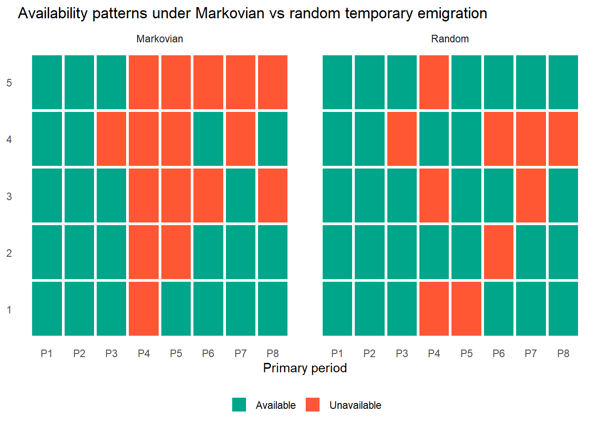

We have spent considerable time on the problem of ambiguous zeros in capture histories. A non-detection could mean the animal is dead, or it could mean the animal is alive but you missed it. The CJS model and the robust design both deal with this by explicitly modelling survival and detection as separate processes.
But there is one more flavour of ambiguous zero that we have been quietly setting aside, and it is time to deal with it properly.
What if an animal is alive, has not permanently emigrated, but is simply not in your study area during a particular primary period? It left temporarily. Maybe a migratory bird has gone south for the winter and will be back in spring. Maybe a marine mammal has moved offshore to feed and will return to your study site next season. Maybe a male deer has temporarily shifted its range during the rut.
These animals are not dead. They have not permanently left. But during the primary period when they are absent, they cannot be detected no matter how good your sampling is. Their \(\tilde{p}_t\) is effectively zero not because detection is poor, but because the animal simply is not there to be detected.
If you ignore this and assume all animals are always available for capture during every primary period, then your estimate of detection probability will be biased downward. You will attribute the absence to poor detection when the real reason is temporary absence. And if detection probability is biased, then your estimates of \(N_t\) and \(\phi\) are also affected.
This is temporary emigration, and the parameters \(\gamma'\) and \(\gamma''\) (gamma prime and gamma double prime) are how the robust design handles it.
The availability problem
Before getting into the parameters themselves, it helps to think about what “availability” means in this context.
In the basic robust design we have been building, we implicitly assumed that every animal in the population is available for capture during every primary period. Available here means physically present in the study area and therefore detectable. Under this assumption, the only reason an animal goes undetected in a primary period is imperfect detection, \(1 - \tilde{p}_t\).
Temporary emigration breaks this assumption. Now there are two reasons an animal might go undetected across an entire primary period:
It was available but not detected: probability \((1 - \tilde{p}_t)\)
It was not available at all: it had temporarily left the study area
These two explanations predict the same observation. A zero summary across all secondary occasions within a primary period. Sound familiar?
Yeah, it is yet another ambiguous zero, operating at the between-period level rather than the within-period level. And just as before, we need a model that separates the two explanations rather than conflating them.
Introducing \(\gamma'\) and \(\gamma''\)
The robust design handles temporary emigration by adding a state variable for availability. At any primary period, an animal is either available (present in the study area) or unavailable (temporarily absent). The two gamma parameters describe the transitions between these states.
Following RMark’s convention:
\(\gamma''_t\) is the probability that an animal is unavailable at primary period \(t\), given that it was available at primary period \(t-1\). In other words, the probability of leaving the study area.
\(\gamma'_t\) is the probability that an animal is unavailable at primary period \(t\), given that it was also unavailable at primary period \(t-1\). In other words, the probability of staying away once already absent.
So \(\gamma''\) governs transitions from available to unavailable, and \(\gamma'\) governs staying unavailable once you are already there.
The key thing to notice is that the two gamma parameters allow the model to represent memory in the availability process. Whether an animal is available at time \(t\) can depend on whether it was available at time \(t-1\). This is a Markov process, which is just a fancy way of saying the next state depends only on the current state.
Random vs Markovian temporary emigration
There are two versions of temporary emigration in the robust design, and they differ in how much memory the availability process has.
Markovian temporary emigration
This is the general case, where \(\gamma' \neq \gamma''\). Whether an animal is absent this period depends on whether it was absent last period. An animal that was unavailable last time is more likely to still be unavailable now (high \(\gamma'\)), while an animal that was available last time has a lower probability of having left (low \(\gamma''\)).
This makes biological sense for many species. A migratory bird that is currently on its wintering grounds is more likely to still be there next month than a bird that is currently on its breeding grounds. The animal’s availability state has genuine persistence.
Random temporary emigration
This is the special case where \(\gamma' = \gamma''\). The probability of being unavailable at time \(t\) is the same regardless of whether the animal was available or unavailable at time \(t-1\). Availability has no memory. Each primary period, each animal independently draws its availability state with the same probability.
Under random temporary emigration, the proportion of animals available at any given time is simply \(1 - \gamma'\), and this proportion is constant across primary periods.
Random temporary emigration is a simpler model with one fewer parameter, and it is often a reasonable starting assumption. If you have no strong biological reason to expect that availability is persistent, it is a sensible default.
Code
set.seed(666)n_periods <-8n_animals <-5# Markovian: gamma_prime != gamma_double_prime# Here gamma_prime = prob of staying away, gamma_double_prime = prob of leavinggamma_prime_m <-0.8# High: once away, tends to stay awaygamma_dbl_prime_m <-0.3# Lower: available animals less likely to leave# Random: gamma_prime == gamma_double_primegamma_random <-0.2sim_availability <-function(n_animals, n_periods, gp, gdp, seed =1988) {set.seed(seed) avail <-matrix(NA, nrow = n_animals, ncol = n_periods) avail[, 1] <-1# All available at startfor (t in2:n_periods) {for (i in1:n_animals) {if (avail[i, t -1] ==1) {# Was available: leaves with prob gdp (GammaDoublePrime) avail[i, t] <-rbinom(1, 1, 1- gdp) } else {# Was unavailable: stays away with prob gp (GammaPrime) avail[i, t] <-rbinom(1, 1, 1- gp) } } } avail}avail_markov <-sim_availability(n_animals, n_periods, gamma_prime_m, gamma_dbl_prime_m)avail_random <-sim_availability(n_animals, n_periods, gamma_random, gamma_random)format_avail <-function(mat, type) {as.data.frame(mat) |>setNames(paste0("P", 1:ncol(mat))) |> tibble::rownames_to_column("animal") |> tidyr::pivot_longer(-animal, names_to ="period", values_to ="available") |>mutate(type = type,period =as.integer(gsub("P", "", period)),state =if_else(available ==1, "Available", "Unavailable") )}avail_df <-bind_rows(format_avail(avail_markov, "Markovian"),format_avail(avail_random, "Random"))ggplot(avail_df, aes(x = period, y = animal, fill = state)) +geom_tile(colour ="white", linewidth =1.2) +facet_wrap(~ type) +scale_fill_manual(values =c("Available"="#00A68A","Unavailable"="#FF5733")) +scale_x_continuous(breaks =1:n_periods, labels =paste0("P", 1:n_periods)) +labs(x ="Primary period", y =NULL, fill =NULL,title ="Availability patterns under Markovian vs random temporary emigration") +theme_minimal() +theme(legend.position ="bottom",panel.grid =element_blank())

In the Markovian panel, notice how unavailability tends to persist? Once an animal goes red it tends to stay red for several consecutive periods before returning. In the random panel, unavailability is independent each period, so the pattern looks more scattered with no obvious runs of consecutive absence.
What temporary emigration does to your estimates
To make the consequences concrete, let us think about what happens if you have genuine temporary emigration but ignore it and fit a model that assumes all animals are always available.
If some animals are temporarily absent, your observed detection rate across all secondary occasions in a primary period will be lower than the true detection probability for animals that are actually present. The model, not knowing about temporary absence, will attribute this entirely to poor detection. So \(\hat{p}\) will be biased downward.
A biased \(\hat{p}\) feeds directly into \(\hat{\tilde{p}}_t\), which in turn affects \(\hat{N}_t\). If \(\hat{\tilde{p}}_t\) is too low, then \(\hat{N}_t = n_t / \hat{\tilde{p}}_t\) will be too high. You will overestimate population size.
The effect on \(\hat{\phi}\) is more subtle. Survival is estimated from the between-period detection history, which now reflects both true mortality and temporary absence. An animal that is temporarily absent looks identical to a dead animal in the between-period summary. So \(\hat{\phi}\) will be biased downward: you will underestimate survival because some of the apparent disappearances are not deaths.
This is the same apparent survival problem we introduced back in the detection problem page, just with a new mechanism. Temporary emigration is one of the things that wedges apart true survival from apparent survival.
The full model with temporary emigration
Adding temporary emigration to the robust design equations gives us one more latent state to track. Each animal at each primary period now has both a survival state \(z_{i,t}\) (alive or dead, where \(z_{i,t} = 1\) means alive) and an availability state \(a_{i,t}\) (available or unavailable), conditional on being alive.
The availability process, following RMark’s convention, is:
where \(\omega_{i,t} = 1\) if animal \(i\) was detected at least once across the secondary occasions of primary period \(t\), and 0 otherwise.
A dead animal cannot be detected (\(z_{i,t} = 0 \Rightarrow \omega_{i,t} = 0\)). An alive but unavailable animal cannot be detected (\(a_{i,t} = 0 \Rightarrow \omega_{i,t} = 0\)). Only an alive and available animal can be detected, and even then only with probability \(\tilde{p}_t\).
Three things must go right for a detection. Three things can go wrong for a non-detection.
Fitting the model with temporary emigration
Now let us fit the full model, allowing the gamma parameters to be estimated from the data rather than fixed at zero.
Code
library(RMark)set.seed(1988)N_true <-300phi_true <-0.80p_true <-0.40gamma_prime_true <-0.1# Prob of staying away if currently unavailable gamma_dbl_prime_true <-0.5# Prob of leaving if currently availablen_primary <-6n_secondary <-3
Code
sim_robust_te <-function(N, phi, p, gp, gdp, n_prim, n_sec, seed =1988) {set.seed(seed)# Survival states alive <-matrix(0, nrow = N, ncol = n_prim) alive[, 1] <-1for (t in2:n_prim) { alive[, t] <-rbinom(N, 1, alive[, t -1] * phi) }# Availability states avail <-matrix(0, nrow = N, ncol = n_prim) avail[, 1] <-1for (t in2:n_prim) {for (i in1:N) {if (alive[i, t] ==0) { avail[i, t] <-0 } elseif (avail[i, t -1] ==1) {# Was available: becomes unavailable with prob gdp avail[i, t] <-rbinom(1, 1, 1- gdp) } else {# Was unavailable: stays unavailable with prob gp avail[i, t] <-rbinom(1, 1, 1- gp) } } }# Detection history det <-matrix(0, nrow = N, ncol = n_prim * n_sec)for (t in1:n_prim) {for (s in1:n_sec) { col <- (t -1) * n_sec + s det[, col] <-rbinom(N, 1, avail[, t] * p) } } det[rowSums(det) >0, ]}ch_data <-sim_robust_te(N_true, phi_true, p_true, gamma_prime_true, gamma_dbl_prime_true, n_primary, n_secondary)ch_strings <-apply(ch_data, 1, paste, collapse ="")rd_df <-data.frame(ch = ch_strings, stringsAsFactors =FALSE)cat("Individuals detected at least once:", nrow(rd_df))
The true values should sit within or close to the confidence intervals for each parameter. The gamma parameters tend to have wider intervals than \(\phi\) and \(p\) because they are harder to estimate, requiring the model to distinguish between different patterns of consecutive absence across primary periods. More primary periods and a larger population will tighten those intervals.
What the gamma parameters tell you biologically
It is worth pausing on what \(\gamma'\) and \(\gamma''\) actually mean for your species, rather than just treating them as nuisance parameters to be estimated and forgotten.
\(\gamma''\) tells you the probability that an animal leaves your study area between consecutive primary periods, given it was present in the last one. A high \(\gamma''\) means animals are frequently moving out of the study area. A low \(\gamma''\) means animals tend to stay put once they are there.
\(\gamma'\) tells you how sticky the absence state is. A high \(\gamma'\) means that once an animal has left, it tends to stay away for multiple primary periods. A low \(\gamma'\) means animals return quickly after leaving.
If \(\gamma' \approx \gamma''\), movement is essentially random: availability does not depend on previous availability state. If \(\gamma' >> \gamma''\), absences are long and persistent relative to the probability of leaving in the first place.
For a migratory species sampled across seasons, you might expect \(\gamma'\) to be high during the migration period: once a bird has left for its wintering grounds it will stay away for the whole winter. For a species with more fluid movement, both gammas might be moderate and similar to each other.
A note on identifiability at the first and last primary periods
There is one practical issue worth flagging. The gamma parameters are not identifiable at every primary period. Specifically, \(\gamma''\) is not identifiable at the first primary period (there is no prior availability state to condition on), and \(\gamma'\) is not identifiable at the last primary period. RMark handles this internally, but you may notice that the design data for these parameters has fewer rows than you might expect.
This is not a problem you need to solve. It is just worth knowing that the gamma estimates in your output reflect the interior primary periods only.
What next?
With temporary emigration accounted for, you now have the complete robust design model. Three latent processes operating simultaneously:
Survival between primary periods, governed by \(\phi\).
Availability within the alive population, governed by \(\gamma'\) and \(\gamma''\).
Detection of available animals across secondary occasions, governed by \(p\).
Each of these can be modelled as a function of covariates, just as in a standard GLM. Time-varying survival. Habitat-dependent detection. Seasonal availability. The robust design is not a single model but a framework that you can customise to the biology of your species and the structure of your data.
The next page covers how to implement this in RMark properly, including how to format your real data, and how to set up model structures with covariates.